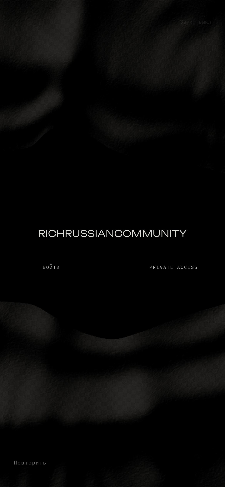
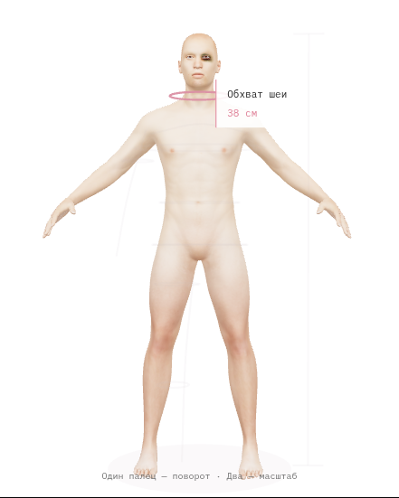
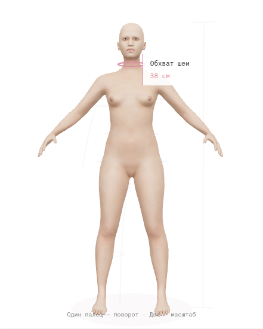
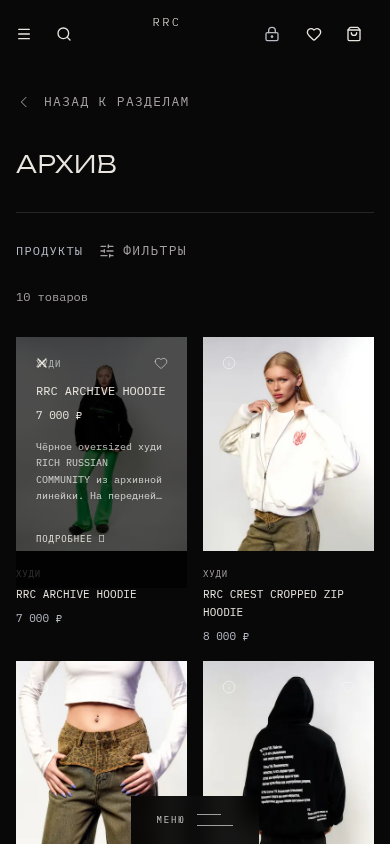

RICHRUSSIANCOMMUNITY / 14 OCT
Стартовая фотография убрана. Удержание товара и возврат в PRIVATE ACCESS восстановлены. Пиксельные мозаики удалены; модели используют лицензированные текстуры кожи. Это реальные кадры браузера, а не сгенерированные макеты.
Вступление
Запись из кадров Chromium с управляемыми часами. Она показывает сцену, не измеряет FPS телефона.
Статичный кадр
Desktop / 1280 × 720
Mobile / 390 × 844, эмуляция Верхняя и нижняя ткань
Мышь / обычные часыКасание / эмуляция, обычные часы
Личный кабинет и удержание товара

Мужская модель / CC0 Aksel skin
Женская модель / CC0 Young Female Hairless
Пределы проверки
На программном GPU интервал мобильного кадра снизился с 380 до 89 мс. Реальный телефон не тестировался. Фигурки параметрические, ножницы авторские; соответствие фотографиям и 60 FPS не заявлены. Ткань использует скан с 4K-исходником; runtime на телефоне 1K, на компьютере 2K.
Полный отчёт: лицензии, файлы, замеры и ограничения